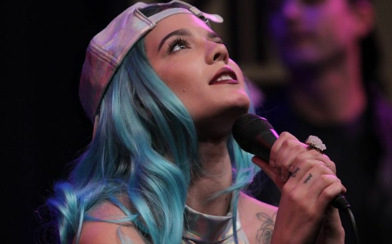

Singer and songwriter, Halsey was born in New Jersey September 1994 with the name Ashely Nicolette Frangpine. Halsey became her stage name: a reference to the subway station in Brooklyn and anagram of her birth name Ashley.
She began her career touring with The Kooks, where she promoted her debut album Room 93. Halsey gained attention with the release of the hit 'Closer' with The Chainsmokers in 2016. She became even more of a sensation after releasing Hopeless Fountain Kingdom with songs like 'Bad at Love' again reaching the top of the charts. Halsey has become a household name singer and is even branching out to acting.
Expect to see much more from this talented artist.
Huffington Post: Being a White Passing Black Womann